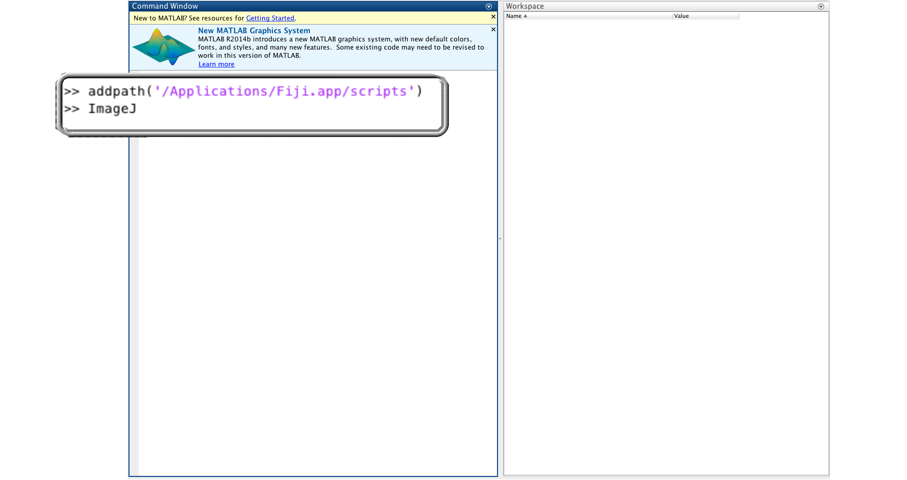
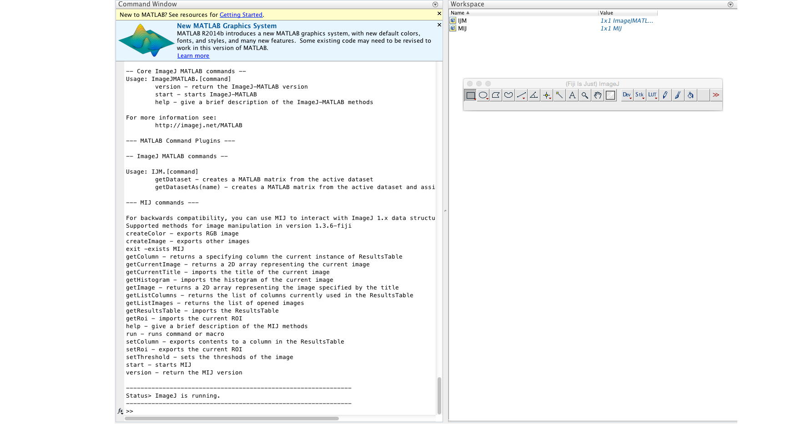
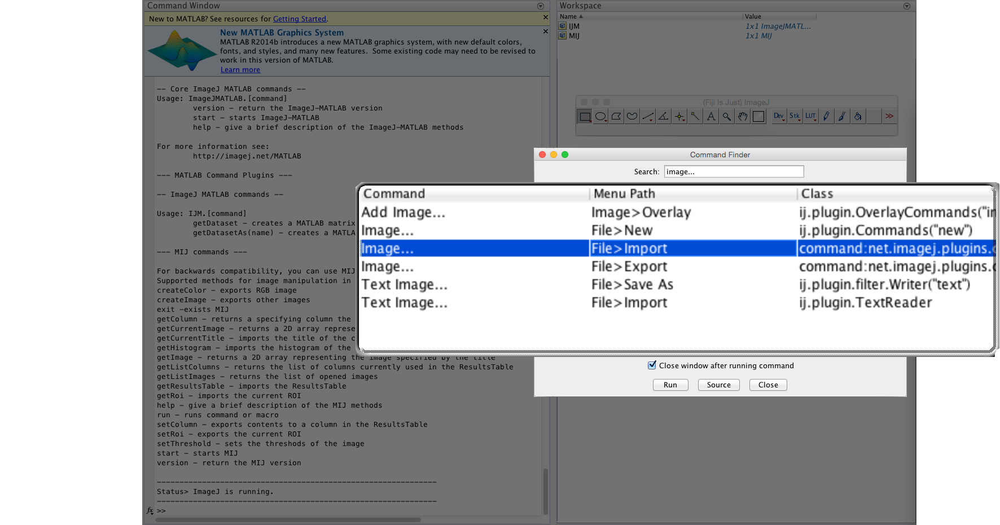
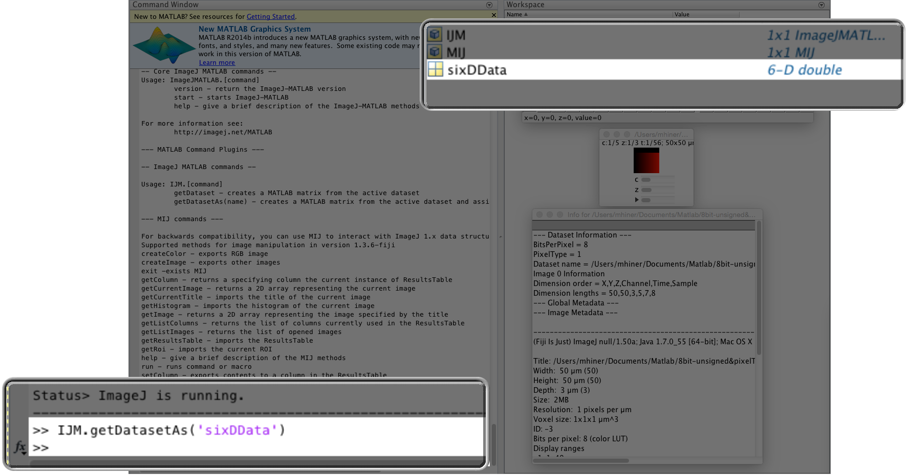

ImageJ+MATLAB
Reunited
Mark Hiner, UW-Madison LOCI
Background & Motivation
| MIJ |
|
|
| Miji.m |
|
|
| ImageJ2! |

|
ImageJ-MATLAB
the update site
- ImageJ.m startup script
- MATLAB < > ImageJ converters
- MATLAB commands
- MATLAB scripting
MATLAB + ImageJ
Starts like Miji
MATLAB + ImageJ
Makes Fiji happy
MATLAB + ImageJ
Adds extensible commands
MATLAB + ImageJ
Uses ImageJ's N-Dimensional data model
MATLAB + ImageJ
Uses ImageJ's N-Dimensional data model
MATLAB + ImageJ
Converters preserve data
ImageJ + MATLAB
TODO discuss converters
TODO show @matrix
TODO show @Dataset return from MATLAB
Summary
TODO diagram relationship between converters, MATLAB commands, script parameters
TODO Emphasize that anyone can add these elements to be picked up by the framework